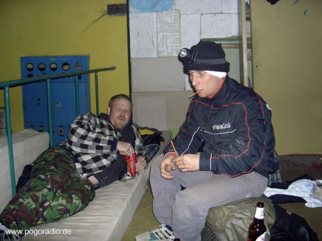
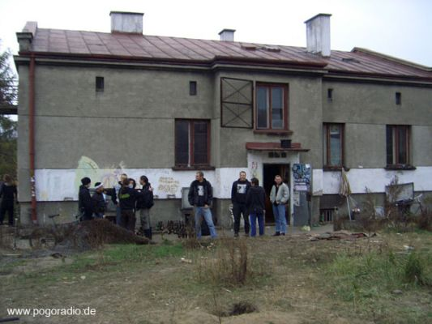
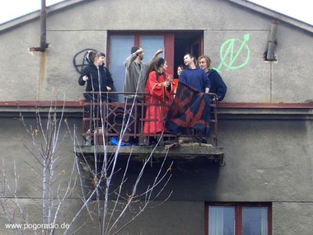

Geschichte · Boxparty-Tour
Sabotakt, die Perversen seid ihr
Die Boxparty-Tour durch Polen, 1. bis 6. November 2005. Der erste Teil.
Ich verstand die Sprache dieser Leute nicht. Was von mir übrig war, konnte nur im Schneckentempo wieder aus dem Nebel der Ohnmacht treten. Oder war es der Dunst polnischer Red & White-Zigaretten, die Stange für nur 39 Złoty?
Beim stehenden K.o. verwandelt sich die ganze Welt in Watte. Mitnichten Zuckerwatte. Vielleicht in Glaswolle, garniert mit dem zähflüssigen, klebrigen Pudding der nach Sieg oder Niederlage geifernden Menge. Nichts ist mehr da. Wie heiße ich eigentlich? Wie verdammt noch mal bin ich hierher gekommen? Gab es da nicht Geschichten von Leuten, denen völlig unbemerkt und bei bester Laune das Gerinnsel im Gehirn geplatzt ist?
Nur stehen tut man eben noch. Auf den ersten Blick eine eigentlich recht angenehme Alternative zur vollständigen Horizontalen, das Gesicht nur noch nützlich als Auffangbecken für die Glassplitter und das im Ring verteilte Erbrochene. Stehen. Stehen und so schnell wie möglich eine Entscheidung treffen. Weitermachen oder aufgeben?
Ein kurzer Abstecher auf die Intensivstation des katholischen Krankenhauses Sosnowiec hatte mehr als verlockende Züge in meiner momentanen Situation. Unser professioneller Ringrichter drängelte mich zu einem Zeichen. Hoffentlich war das frische Blut auf seiner ehemals strahlend weißen Sabotakt-Boxparty-Uniform nicht aus gerade erst entstandenen Öffnungen meines Körpers entwichen.
„Ring wolny!“, wie der Pole zu sagen pflegt. Ring frei zur … ja, zur wievielten Runde eigentlich? Verdammt, ich konnte mich nicht erinnern.
„Ein einzig Volk von Brüdern wollen wir sein.“ Deswegen hatten wir doch die Idee der Boxparty überhaupt erst nach Polen getragen. War es wirklich deshalb? Entbehrte die ganze Sache nicht jedwedem Sinn? Der beschissene Wilhelm Tell mit seinem Volk der Brüder konnte mir da sicher nicht weiterhelfen. Und Arthur war bereit. Er wartete auf mich. Er hatte mit den verbrüderten Völkern am wenigsten zu tun. Nichtsdestoweniger wäre er sicher auch bereit gewesen, mir einen Apfel vom Kopf zu schießen, hätten wir statt der mit Steinen gefüllten Tonnen und der mit Rohrisolierung geschützten Baumarktseile einen Satz handelsüblicher Armbrüste angeschleppt.
Wo früher einmal der linke Schneidezahn des Sosnowiecer Eugen Leithwolfs seinen Platz hatte, war inzwischen nur gähnende Leere. Ich wünschte mir, den Verlust dieses wichtigen Accessoires auf mangelnde kämpferische Fähigkeiten zurückführen zu können und nicht etwa auf akuten Vitamin-C-Mangel oder den regelmäßigen Konsum minderwertiger chemischer Substanzen, hergestellt in der großen Pause der Sosnowiecer Berufsschule. Trotzdem war ich froh, einige frische Orangen meinem spärlichen Reisegepäck hinzugefügt zu haben.
Die Pfeife ertönte. Und wieder ließen Arthur und ich zwei Minuten lang hemmungslos mehr oder weniger gezielte Schläge in unsere Jünglingsvisagen rasseln. Am Bug der Galeere trommelten die verwegenen Leser dem blutrünstigen Pöbel das letzte Bisschen Barmherzigkeit aus den Gliedern.
Am Ende war ich um einen Sieg reicher und wieder einmal um einigen Stauraum in meinem Oberstübchen ärmer. Und es war erst der zweite Abend, die erste Boxparty unserer Polenreise.

Noch am Morgen hatte unser Sabotakt-Kulturtrupp es sich nicht nehmen lassen, das 20 km von der halbzerstörten Industriestadt entfernte KZ Auschwitz zu besichtigen. „Wer seine Geschichte nicht kennt, ist dazu verdammt, sie zu wiederholen“, gilt logischerweise auch für die Horden an Jogginghose tragenden Gymnasiumstouristen aus austauschbaren europäischen Staaten, die sich wohl vor allem über die Vitrinen wundern mussten, hinter denen wahlweise Tonnen von Prothesen, Brillen, Koffern oder Haarbürsten aufgetürmt waren. Fehlten doch an diesen Beweisstätten aus der überaus unschönen Ideenfabrik z. B. auch meines Opas die Münzschlitze und Metallgreifarme – ergänze ich. Zur Enttäuschung der aknegeplagten Minderjährigen mit übermäßigem Geschlechtstrieb gab es hier nach wie vor keine Hauptgewinne an Land zu ziehen. Immerhin kann man am Ausgang zwischen 10 verschiedenen Postern zum Schnäppchenpreis von nur 5 Złoty pro Stück wählen, und die Pissoirs in den Besucher-Klos, umfunktionierten Sind-die-Baracken, laden fast schon zum Kuscheln ein.
Gerade wegen der nicht zu leugnenden Ähnlichkeit mit unserem gemütlichen Nachtquartier entstand dieser anheimelnde Eindruck. Ein beinahe brennendes Feuer im Tonnenofen, auf der Grundlage von einem Zigarettenpäckchen und einem Stückchen staubigen Holz vom nahegelegenen Speicher, konnte das riesige Gebäude, in dem eine Grundtemperatur von ca. 2 °C herrschte, zwar nicht erwärmen. Der beißende Rauch aus verschmortem Plastik und Holz des letzten Jahrhunderts ließ mich allerdings von mediterranen Fischgerichten und zukünftigen Boxparties im sonnigen Süden träumen.

Mein Lieblingsraum aber: nach wie vor die Waschküche, in der Nacktbilder unserer Gastgeberinnen zur Betrachtung bereithingen – im künstlerischen Kontext, versteht sich. Darüber redeten wir nicht.
Wir hatten andere Siege zu feiern, andere Niederlagen zu begießen. Die Insignien des Stumpfsinns standen uns ausreichend zur Verfügung. Längst hatten alle ehemaligen Kontrahenten Brüderschaft getrunken. Ich wurde vom zahnlosen Arthur permanent mit seinem Lieblingsgetränk verköstigt. Nicht, dass ich etwas gegen reinen Spiritus gehabt hätte; die Kopfschmerzen und das getrübte Augenlicht am darauffolgenden Morgen ließen mich diesen außergewöhnlichen Rausch dann doch lieber in die Kategorie der einmaligen Erlebnisse bunkern. Auch wurde mir die Mischsubstanz, die Arthur immer wieder als Limonada anpries, zunehmend suspekt. Dem Schicksal des Größenwahns durch ein, zwei Liter tollkirschigen Sirup oder ein Kännchen Stichapfeltee konnte ich allerdings entfliehen.
Weiter, nur weiter, nur weiter marschieren … Wer hatte dieses wunderbare Lied nur erfunden?
Am 3.11. war es Zeit für das Sabotakt-Team, diesen Ort der morbiden Erholung zu verlassen und sich auf den Weg nach Łódź zu machen, wo die zweite Party stattfinden würde. Im M9-Quarter hatten wir unsere Spuren hinterlassen. Zwar winkten uns die sagenhaften 4 Bewohner und 345 Katzen des ehemaligen Kinos nicht zum Abschied, dennoch wussten wir: Wir haben wieder einmal das Richtige getan. Wenn das nicht Punk ist, wer hat dann noch Lust, Punk zu sein?

Und längst war noch nicht alles erledigt. Zwei Parties standen uns noch bevor. Bisher kein Geschlechtsverkehr, keine Tränen, immerhin schon Blut. Wir harrten der Dinge, die da kommen mochten. Neun Mann in einem Auto, ein Auto und neun Mann … Darüber soll beim nächsten Mal berichtet werden.
Quelle: Archiv des Pogoradio-Teams. Der Text stammt von Tarek (Sabotakt). Anfragen und Hinweise an pogoradio@gmail.com.